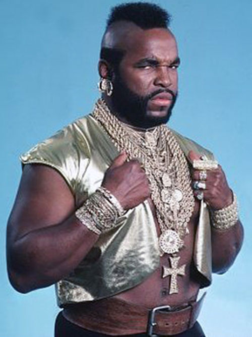

Qui est ce ?
Bosco "Barracuda" Baracus est un personnage fictif de la série télévisée américaine L'Agence Tous Risques (The A-Team),
diffusée de 1983 à 1987 sur NBC. Il est incarné par l'acteur et catcheur Mr. T (Laurence Tureaud), et reste à ce jour
l'un des personnages les plus emblématiques de la télévision américaine des années 80.
Ancien sergent des forces spéciales américaines, Barracuda fait partie d'un commando de quatre vétérans du Viêtnam injustement
condamnés par un tribunal militaire et contraints de vivre dans la clandestinité. Aux côtés du Colonel Hannibal Smith, de Templeton "Futé"
Peck et du pilote H.M. "Looping" Murdock, il met ses compétences au service de causes justes en échange d'une rémunération —
formant ainsi l'Agence Tous Risques.
Barracuda est le gros dur au cœur tendre du groupe d'anciens soldats condamnés à tort et recherchés par l'armée.
C'est le muscle et surtout le bricoleur de génie de l'équipe.
Privés de leurs armes et enfermés dans une grange, un garage ou un entrepôt, les membres de l'Agence ont néanmoins à leur
disposition du matériel comme de l'acétylène, de la poudre à explosif, des tôles et des tubes d'acier — permettant à Barracuda
de bricoler des armes ou de remettre en marche des engins, ce qui leur permet de s'échapper puis de neutraliser les malfaiteurs.